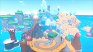

特定の裏世界では残像が発生します。2人プレイの場合、残像が発生する代わりに片方の画面と同じ映像が表示されます。
Afterimages can appear in certain out-of-bounds areas. In 2-player mode, the same image as the other player's screen is displayed instead of the afterimage.
| コース画像ICON | コース名NAME | 難易度DIFFICULTY | 箇所SPOTS |
|---|---|---|---|
| シャボンロードSqueaky Clean Sprint | ★★ | 2 | |
 |
ヨッシーアイランドYoshis Island | ★★ | 1 |